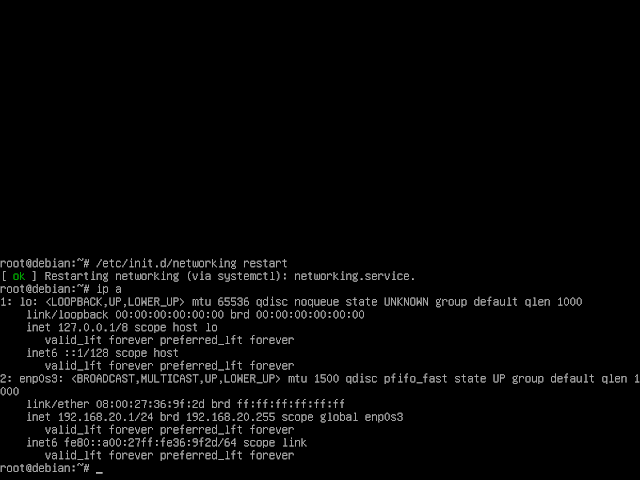
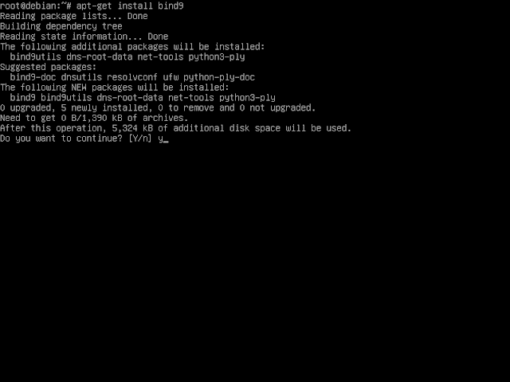

1. Login ke debian dengan menggunakan user root dan setelah itu kita setting IP untuk server terlebih dahulu dengan mengetikkan perintah nano /etc/network/interfaces
2. Jika sudah, restart IP dengan perintah /etc/init.d/networking restart. Dan cek konfigurasi IP sudah berhasil atau belum dengan perintah ip a.
3. Jika berhasil, maka langkah selanjutnya masukkan DVD 2 dan install bind9, dengan perintah apt-get install bind9. Jika ada pertanyaan [y/n] klik Y kemudian enter
4. Jika terjadi error seperti gambar dibawah ini, jangan panik. Kita ketikkan perintah apt --fix-broken install. Tetapi jika tidak ada berarti instalasi berhasil.

5. Kemudian ada perintah untuk memasukkan DVD binary 1 seperti gambar dibawah ini, masukkan DVD binary 1 kemudian enter.
6. Untuk memastikan instalasi sudah berhasil atau belum kita ketikkan ulang perintah apt-get insatll bind9. Jika ada keterangan 0 upgrade, 0 newly installed, 0 to remove and 0 not upgraded. Seperti gambar dibawah ini berarti instalasi telah berhasil.
7. Kemudian masuk ke directory bind dengan perintah cd /etc/bind.
8. Membuat file forward, dengan cara copy file db.local dengan perintah cp db.local db.tkj. kemudian konfigurasi file db.tkj dengan perintah nano db.tkj. Lakukan konfigurasi seperti gambar dibawah ini.
.jpg)
9. Kemudain membuat file reverse, dengan cara copy file db.127 dengan perintah cp db.127 db.192. kemudian lakukan konfigurasi pada file db.192 dengan perintah nano db.192, lakukan konfigurasi seperti gambar dibawah ini.
10. Kemudian membuat Zone Domain. Edit tambahkan konfigurasi untuk forward dan reverse pada file named.conf.options dan named.conf.local.
Langkah pertama kita konfigurasi pada file named.conf.options dengan perintah nano named.conf.options. kemudian ubah konifgurasinya sepeti gambar dibawah ini yang diberi tanda kotak merah.
Kemudian langkah kedua kita konfigurasi named.conf.local dengan perintah nano named.conf.local. kemudian tambahkan konfigurasinya seperti gambar dibawah ini yang diberi tanda kotak merah.
11. Menambah dns-name server. Tambahkan dns dan nameserver dari server Debian tersebut pada file resolv.conf. agar dapat diakses melalui komputer kita. Ketikkan perintah nano /etc/resolv.conf. Lakukan konfigurasi seperti gambar dibawah ini.
12. Setelah selesai konfigurasi restart bind9 dengan perintah /etc/init.d/bind9 restart. Jika sudah OK berarti sudah berhasil. Jika belum silahkan teliti lagi pada konfigurasi network atau konfigurasi debiannnya.
13. Sebelum melakukan pengujian DNS Server nya, kita install terlebih dahulu dnsutils dengan perintah apt-get install dnsutils. Jika ada pertanyaan [y/n] tekan Y lalu enter.
14. Kemudian lakukan pengujian dengan perintah nslookup tkj.com dan nslookup 192.168.20.1. jika berhasil maka akan seperti gambar dibawah ini.
15. Kemudian kita coba lakukan ping dari PC host, langkah pertama atur ip terlebih dahulu pada PC host/client pada bagian Host-Only Adapter. Dan pastikan untuk network Server debian-nya Host-Only Adapter.
16. Jika sudah, ping melalui cmd dengan perintah ping tkj.com dan pastikan hasilnya reply ..... time